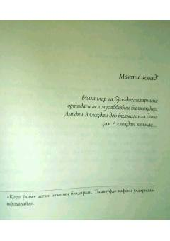

S6Fotih Dumanning «Sir» asarining davomi bo'lgan tarixiy-badiiy kitob.
Mazkur kitob Fotih Dumanning «Sir» asarining oltinchi qismidir. Asarda Yahyo afandining uzlatga chekinishi, tog'da hayot kechirishi va Sulton Sulaymon bilan bog'liq voqealar bayon etiladi.